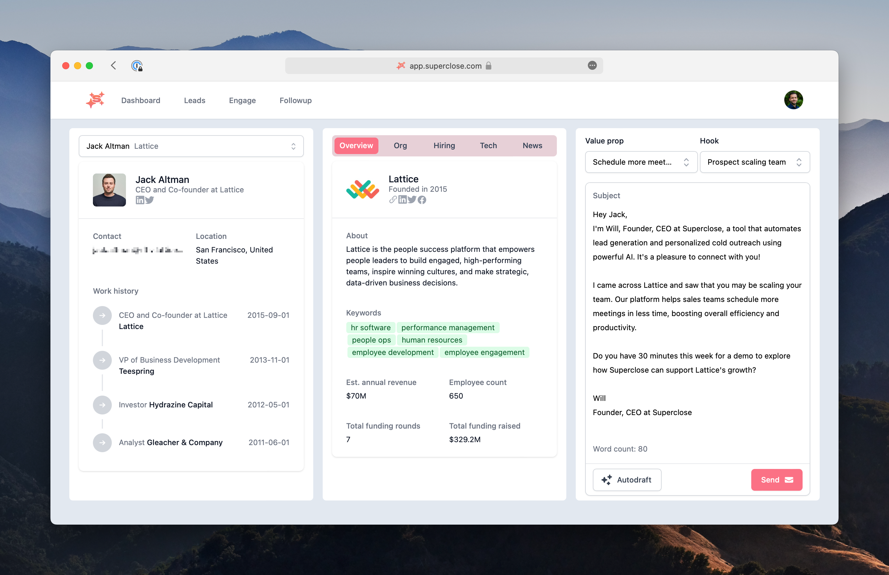

Around November last year I felt a strong creative urge to build a product. I’d been floating around this idea of productizing the sales process I’d used as a founder and early startup employee.
I thought I’d share the experience of building it and what I learned about “AI apps”.
Building
I’d done a lot of cold outbound and found it challenging to scale and run. I especially found it difficult to write compelling copy for each buyer; personalization helped open and reply rates, but took time. When I talked to other people about this, the problem resonated.
So I built Superclose to auto-draft great cold outreach and solve my and others' blank page problem. The product would understand details about a user’s offering, gather facts about a prospect and company, and write to that prospect in the user’s voice.
I hadn’t built a full-stack app but wanted to try. I stuck with tools I knew: Next.js, Tailwind, Supabase, Vercel. I took a flyer on Typescript and loved it, but NextAuth was a bear. [1] Building v1 took a month, and v2 two more weeks.
The product has three parts: (1) leads upload, (2) a view for surfacing lead and company data to autodraft and send emails, and (3) a view to track reads and follow up. On the backend I gathered prospect data from a number of sales APIs. To personalize emails, users store selling points (“value props” and “hooks”) in their account and share a few example emails they’ve sent so the model “writes like them.”

I got feedback while I built but got much more when I went to sell. I pitched some friends and got warm intros, focusing on early b2b founders because I understood their problem. In two weeks I closed just under five figures of ARR.
Usage started strong. With feedback, I shipped updates and improvements. While I’d included a data offering in v1, users already had providers like Apollo, so I dropped it. The tighter focus facilitated momentum.
Then usage slowed. The challenge in working with early-stage companies is that their needs change quickly. I talked more than one user through a pivot. [2]
I shifted focus to early sales teams with steadier needs and more seats, which meant larger contracts. But buyers didn’t see how Superclose fit into their existing multi-vendor stacks. To form a sharper wedge, I built a Chrome extension to minify Superclose for Gmail. Buyers liked it, but didn’t get out their wallets.
I hit pause on the project as it didn't feel like I could make it a big or fast-growing business. That said, I still build around the product today — I’ve tested a few other ideas under the Superclose umbrella — but am not trying to grow it substantially. It remains a great tool for a few users, and an excellent lab for experimentation.
Takeaways
That’s the story: I built something, took it to market, pivoted and iterated, and so on. It’s not an uncommon trajectory.
I did, however, learn a lot that felt unique because it was an “AI-first app”. Given the hype around these kinds of products, it’s worth sharing some takeaways.
Building on AI
Carve out stochasticity. LLMs are supremely nondeterministic, which make them great for creative tasks but challenging for tasks requiring reproducibility. Superclose had room for creativity in the 100 words of a draft email. This mostly worked, but the non-determinism still reared its head in random places. For instance, gpt3 would hallucinate my name, or details about the prospect. So, it became important to understand what parts of the product are “closed” (e.g., a signature) versus “open-ended” (e.g., value prop wording for a cybersecurity account executive). How to do this is non-obvious at the start and requires ongoing assessment.
Relying on vendors so heavily is brutal. For a few weeks I fell into a tough pattern of getting texts from a user about something not working, then getting a text from OpenAI’s status page about an outage. It wasn’t strictly my fault, but it was a bad user experience. After finally getting an Anthropic API key, I built redundancy with Claude, while gpt uptimes gotten better. I hope foundation model providers improve reliability, otherwise AI-first products may get saddled with reputations of instability.
Swapping AI providers is both easy and not. Replacing a call to OpenAI with one to Anthropic takes a few minutes. However, getting similar performance takes many more hours, given the quirks of each model. Claude is more verbose than gpt4, and prompts require a different approach. In Superclose’s case, outputs are structurally the same, but feel distinct in tone and “selling strategy.” For production AI apps these complexities will only grow as use cases and models proliferate. I’ve said LLMs look on track to commoditize [3], but I expect tooling to emerge for such hot swaps.
Designing intelligent experiences
Personalization is paramount. Part of the magic of AI is its infinite flexibility, and a beautiful thing about prompt strings their programmability. Personalization becomes very easy. For instance, the naive approach to drafting emails might be to decide rules for a good email. But if it doesn’t sound like users, it won’t land. So, over time, the draft generation prompt I used evolved to include not only instructions to gpt3 but also user-stored value props, best-available hooks to catch attention, and sampled past emails to match a user’s voice and tone. The results were far superior.
Natural language prompting is v0.01 of human-AI interaction. Prompting feels the most natural way to start interacting with AI. [4] However, I don’t see future software as a series of dialog boxes. These interactions are too unbounded, too nondeterministic, and require too much thought. The right UI should draw a line from user empathy, to workflow understanding, to creativity, to lightweight input.
One example I developed while watching people use Superclose was “highlight to refine”. I’d watch users click around prospect or company details to learn more before sending an email, and if they found a compelling detail to mention, they’d refine the draft. This felt ripe to automate (sped-up demo below).
Keep humans in the loop for now. Some users asked for “completely automated outreach”, where they’d upload leads and fire off a few thousand emails. There’s many reasons I didn’t want to build this, but broadly I’m not sure users should have such overwhelming trust yet in AI apps. There’s still the occasional draft generation that reads a bit wonky, or makes a strange decision around how to phrase a selling point. Until there’s sufficient data on the stochasticity of a use case, it’s better to build human trust and have users, not agents, take action.
Selling "AI-first"
The shine of AI wears off quickly if the product doesn’t deliver enough value. User attention decays quickly, especially when your product indexes on novelty. With the rate of AI-assisted software development today, builders should assume many competitors to every offering in the near future. I won’t go on about moats or defensibility again [5], but in short, an orientation towards delivering real, demonstrable value is critical.
“AI” isn’t the differentiator most think it is. The rush into the market of new tools offering similar email drafting services wasn’t just overwhelming to track, but overwhelming to buyers. Funny enough, I’m not sure buyers truly care. Outreach, Apollo, and a smattering of other legacy tools do the job well enough. AI or not, it remains a winning strategy to be different, not strictly better.
Many “obvious” AI-first products don’t have clear asymmetric advantages over an existing product bolting on AI. There’s no slog factor (e.g., it did not take long for Outreach and Salesforce to ship similar autodraft capabilities), and existing products have usage and users. For startups tackling existing problems served by existing products, AI is the easy piece. First, find the real, unique, and durable advantage that AI offers your product over an existing provider — and no, having AI isn’t enough. Think more along the lines of architecture and data model. Second, recognize there is still much more product to build around the AI to deliver a compelling offering relative to existing solutions. For example, it took me much longer to build solid user auth than it did to build any core auto-draft functionality.
[1] Funny enough, I embarked on this project before I’d used Copilot and about 20 days before ChatGPT was released, so I didn’t know how much help was coming.
[2] Interestingly, more than one user felt Superclose got them to pivot sooner because they talked to prospects more.